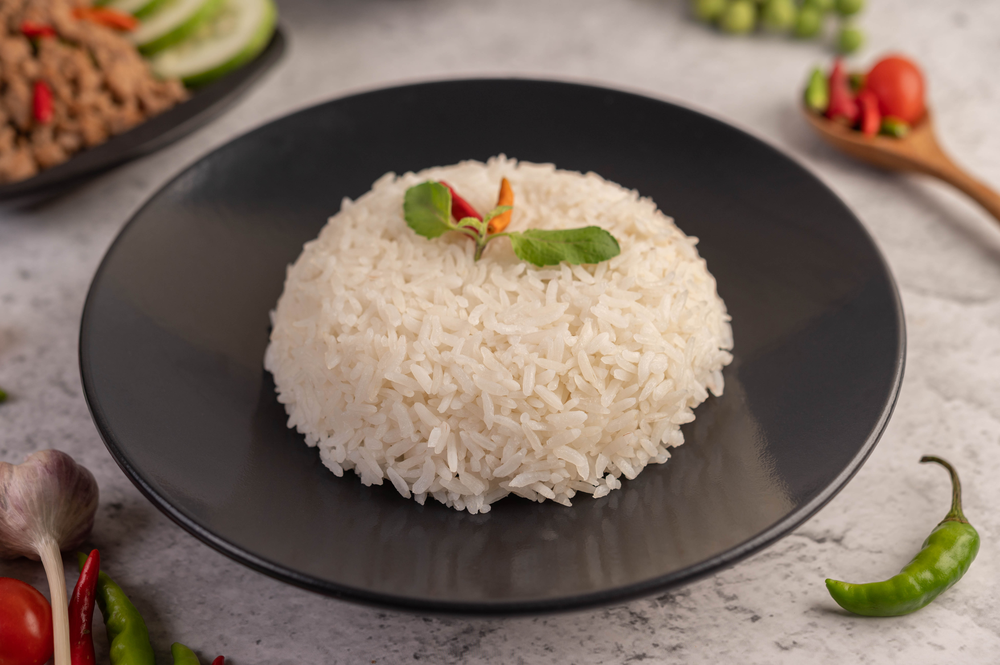

Rice Recipe
Description
You don't need a rice cooker to make foolproof rice. Use this recipe to make basic white rice in a saucepan
Plain white rice is an excellent inexpensive side dish for nearly any meal—it's hard to find a dish that rice doesn't complement
Ingredients
- 1 cup long-grain white rice
- 2 cups water
- 1 tablespoon finely chopped parsley, optional
- 1 tablespoon unsalted butter, optional
Steps
- Rinse the rice under cold water until the water runs clear. Drain in a colander and set aside.
- In a medium saucepan, bring the water to a boil. Add the salt, stir, and then add the rinsed and drained rice. Stir with a fork.
- Reduce the heat to low, cover, and let simmer for 20 minutes
- Remove from the heat and fluff with a fork. Transfer to a plate and serve garnished with butter and parsley, if desired.